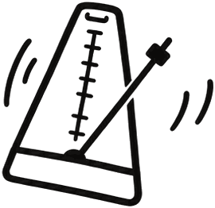
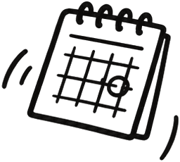
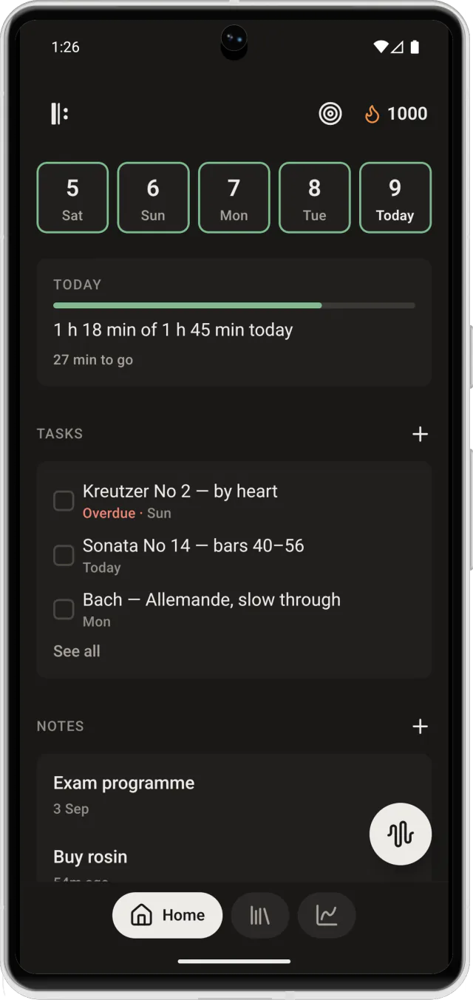
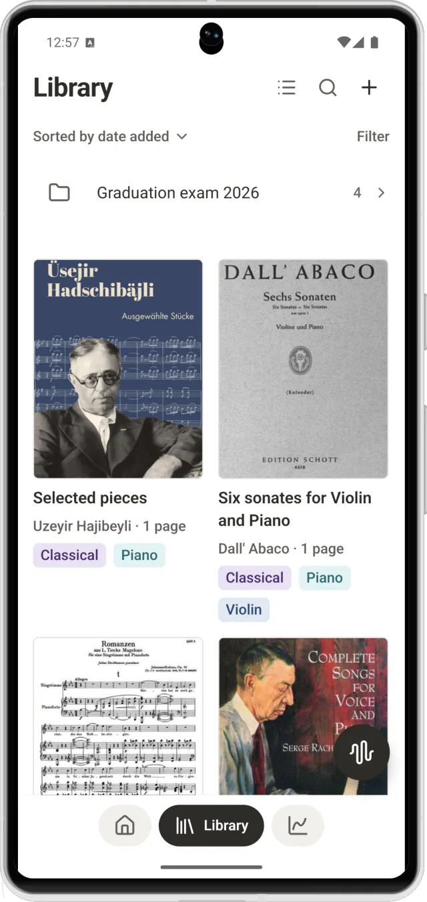
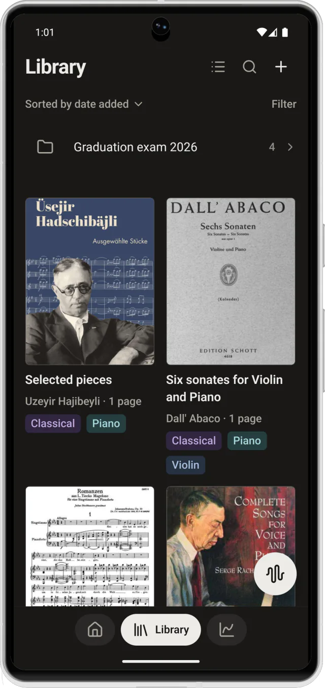
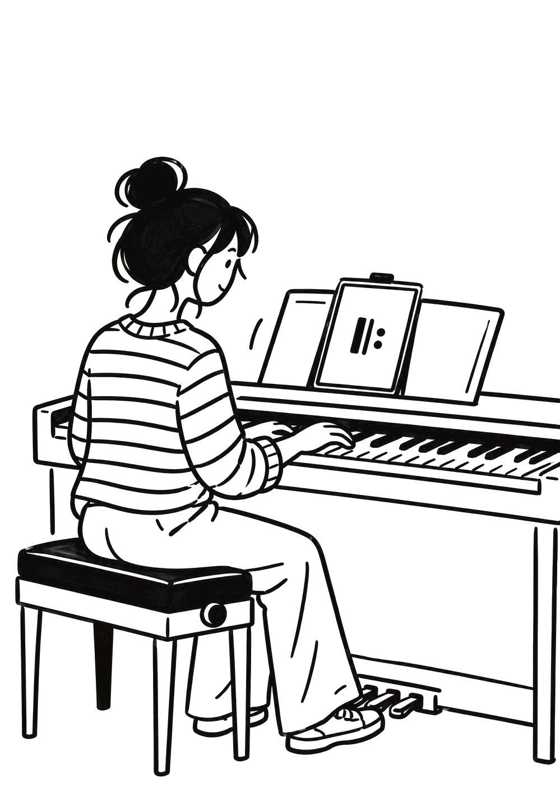

Your practice. All in one place.
Sheet music, pencil marks, a metronome, a tuner, a recorder and a practice log — together in one session on the music stand.



Before Rehearsio
Six apps on one music stand.
A tuner, a metronome, voice memos, a notebook, a stopwatch and a practice diary — and none of them knows what the others did.
With Rehearsio
One session holds them all.
Start it, and everything happens inside: the score is open, the metronome is under your hand, the recorder is running and the time counts itself.

A closer look
Everything a practice needs, from the first page to the last bar.
-
Library
Your scores, on one shelf.
Bring in PDFs from Files, Mail or any app that can share. Tag them by instrument, gather them into programmes, and every score opens on the page you left.
- Import from any app that shares
- Tags, folders and filters
- Opens where you left off

-
Practice session
One tap starts the session.
The clock runs, you say what you are working on — warm-up, scales, etudes or a piece — and five tools wait in a row under your thumb, over the score. The session on the right works: start the metronome, tune a string, drop a mark.

What are you working on?
110 Moderato
A4
−12 cents
437.0 Hz
A 440 · Violin · a demo, the app listens to your instrument
00:00Tap the flag where it went well, or where it didn't.
- Exam programme29 Aug
- Buy rosin4 Sep
05:00
-
Pencil marks
Write on the page, like on paper.
Six pencils and a highlighter, straight onto the page: a fingering, a breath, the fast run marked in yellow, a ring round the bar that keeps going wrong. The marks belong to the score, so they are still there tomorrow.
Pick a pencil

-
Recording
Hear how it really sounded.
Record the run-through and play it back at half speed. Every take stays with the session it came from, and the marks you dropped — went well, didn't work — take you straight to the bar.
- Playback at 0.5×, 0.75× and 1×
- Marks dropped while recording
- Recordings stay on the phone

-
Tasks and notes
Tomorrow starts where today stopped.
Tasks with a day on them, notes you will find again, and a daily goal that fills as you play.

-
Statistics
See the hours add up.
Minutes per piece, days in a row, a calendar that fills in green. On a week that felt slow, it shows the hours were there.
- This week
- 4 h 50 min
- Sessions
- 7
- Longest
- 1 h 48 min

iPhone, iPad and Android
Day or night, it follows your phone.
Bright for a sunny room, dark for an evening rehearsal — Rehearsio switches with your system, and the page of music stays white either way. Drag the line.




What's inside
Nine tools that already know about each other.
-
Sheet music library
Bring in PDFs from Files, Mail or anywhere that can share. They open where you left off.
-
Pencil marks
Six pencils and a highlighter, straight onto the page. Fingerings, breaths, the bar you keep missing.
-
Metronome
Time signatures, accents, subdivisions. It keeps its beat while the rest of the app is busy.
-
Tuner
Note, cents and a needle that holds still. Works for anything with a pitch.
-
Recording
Record the run-through and hear it back. The recording stays on the phone unless you send it somewhere.
-
Notes
What the teacher said, what to fix, what to ask next time. Searchable, tagged, tied to the piece.
-
Stopwatch and timer
How long you actually played, split by what you played. Counted for you, not by you.
-
Progress
Days in a row, minutes per piece, tempo over weeks. A calendar you can read at a glance.
-
Backup you own
Your whole library in one file — scores, marks, recordings, history. Put it wherever you keep things.

Now on the App Store and Google Play
Be part of the journey.
Rehearsio is free, needs no account, and keeps your scores, marks and recordings on your phone. Bring it to your next practice — and tell us what it should learn next.
Support
Something broken, or something missing?
Write to us. A person reads it, and a bug report from someone who plays is worth more than a hundred that aren't.